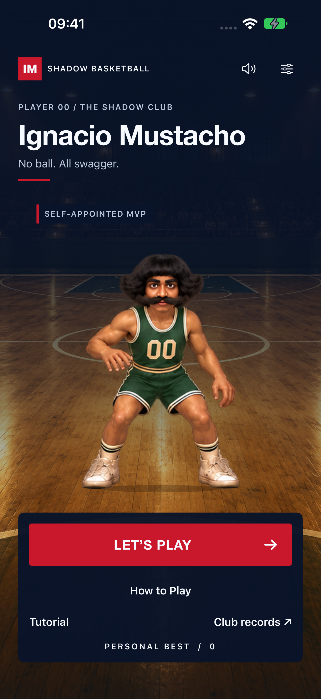
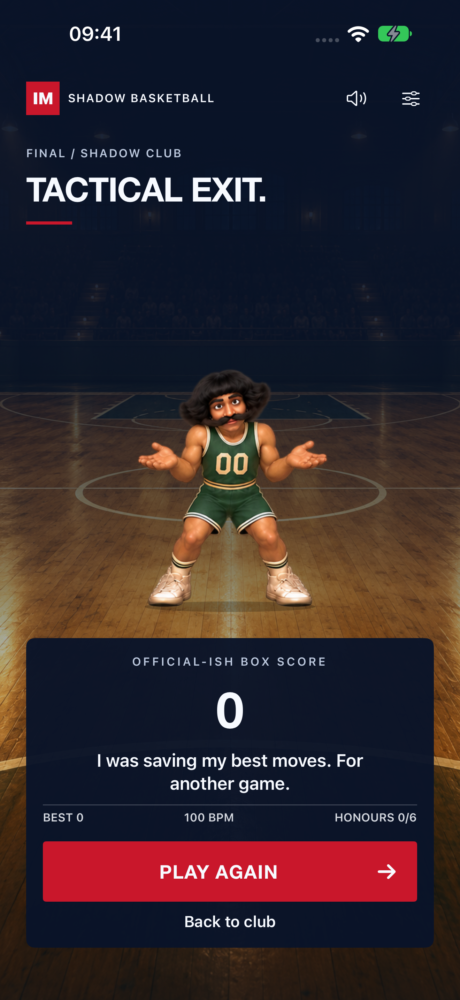
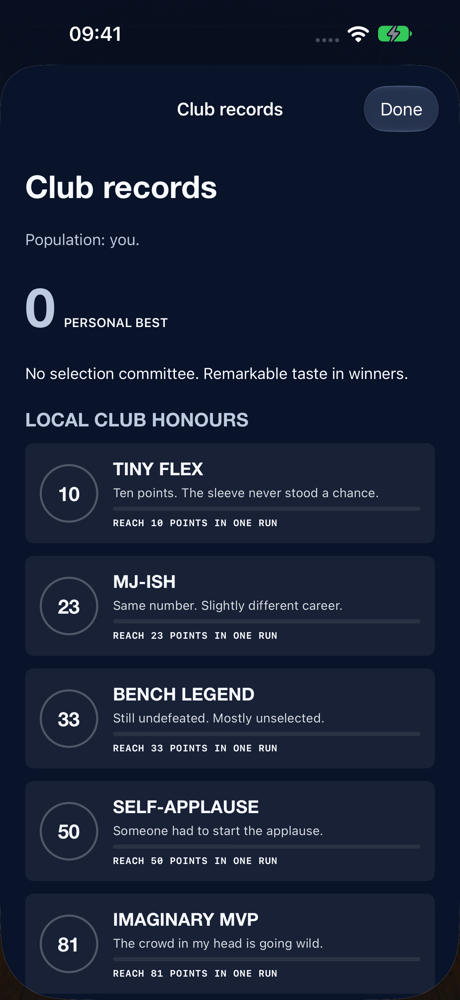

IGNACIO MUSTACHO / DESIGN REVIEW
Dal club al tabellone.
Confronto con la versione verde, arancio e oro del commit 23ea317. Navy, rosso atletico, bianco e carbone; tipografia sobria e allineamenti regolari. Le immagini sono catture originali del simulatore.
Home
Titolo editoriale, marchio IM, azione principale rossa.
Prima Dopo
Dopo
Finale
Tabellino leggibile, battuta scritta e replay.
Prima Dopo
Dopo
Premi
Numeri e progressi locali, senza accenti dorati.
Prima Dopo
Dopo